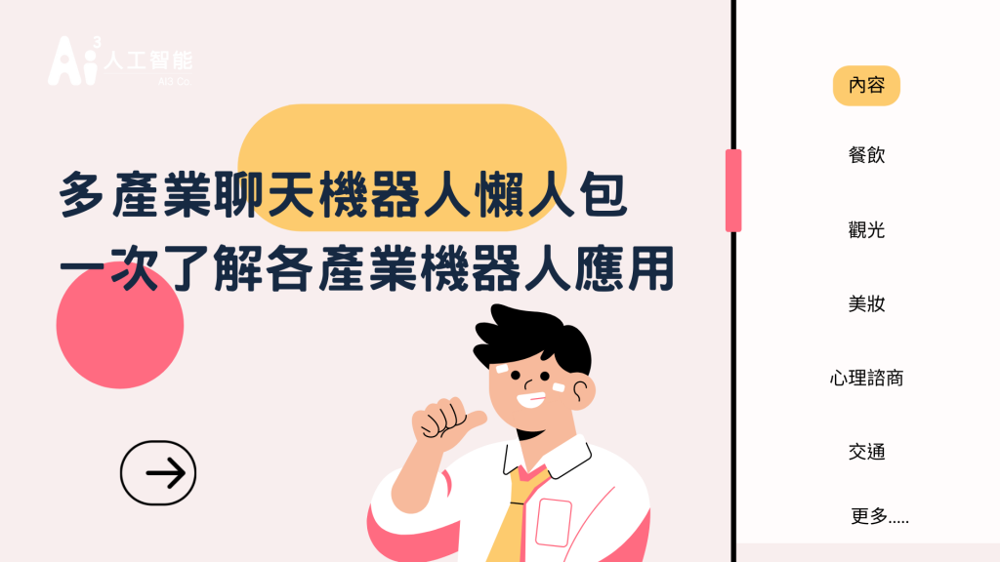
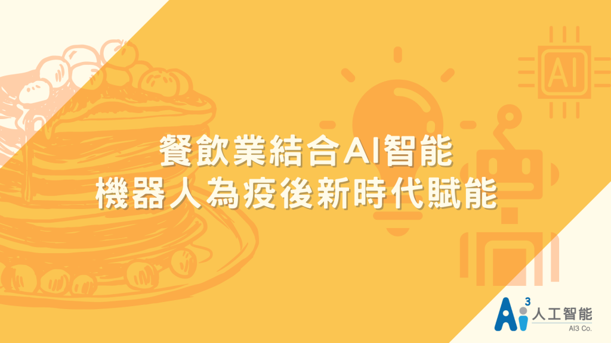
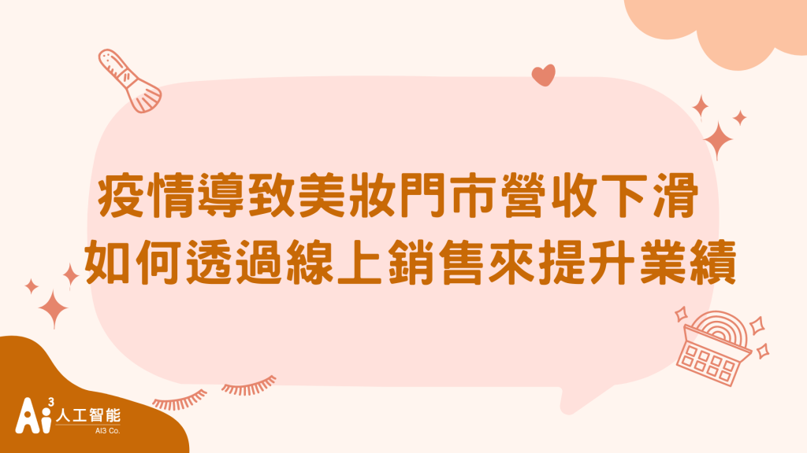
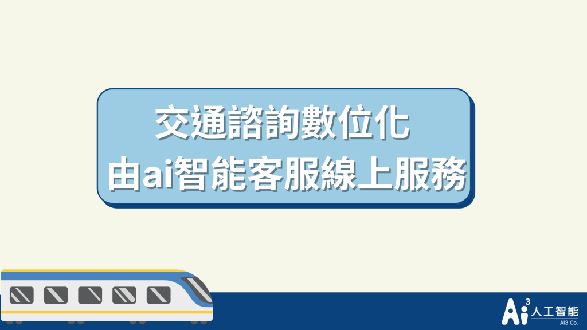
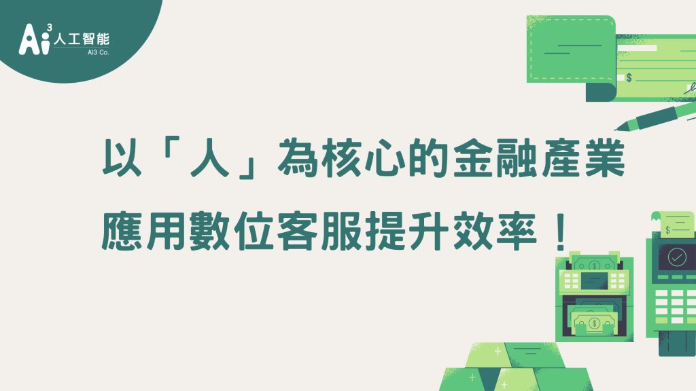

最早期的聊天機器人為1996年麻省理工學院人工智能實驗室所開發Eliza，應用於醫學透過腳本模擬心理治療師與病患間的 對話互動。而近年聊天機器人有很大的轉變，主要應用於解決客服人力不足問題，而現在許多產業導入聊天機器人不只應用於客服。
餐飲機器人

特色
數位世代下將機器人導入於餐飲業有幾項特色「訂位流程系統化，人力運用更有效率 」、「全通路整合，管道更多元」、 「提升顧客互動量，收集顧客喜好 」、「降低人力成本」 、「優化客戶體驗」
餐飲產業痛點
因疫情消費者不敢外出內用，以及餐飲人才流動率高，營業成本難以控制，可透過機器人來解決以上問題
➤餐飲機器人文章：https://ai3.cloud/article-ai3-chatbot-catering-0021/
觀光機器人

特色
疫後新時代，使用聊天機器人與遊客互動，可讓消費者更安心旅遊，好處包括互動過程「不需與員工接觸」、「減少人力成本」、「24小時即時服務」、「免除語言隔閡」
觀光產業痛點
疫情期間，消費者更注重無接觸，若有接觸風險會讓遊客無法安心旅遊，加上因爲疫情收益減少需要控制人力成本，無法提供24小時即時服務，面臨以上問題，服務品質也下滑沒辦法提供完善服務，如何透過機器人來解決以上問題
➤觀光機器人文章：https://ai3.cloud/article-ai3-chatbot-tourism-0022/
美妝聊天機器人

特色
因應疫情的影響，導致許多美妝產業的營業額急速下降，在這個世代下產生了「美妝機器人」，會有以下四大特色：
- 專業美妝顧問形象，運用智能機器人解決大多數美妝科普問題
- 人機協作，可於智能機器人綁定專業美妝師進行線上諮詢
- 分群／分眾客戶族群推播，精準推送對應的美妝產品給予消費者
- 企業系統彼此連動串接，如產品介紹、訂單庫存更動等。
- 結合熱門平台的服務，如LINE POINT點數發放、FB/IG直播等
美妝產業痛點
會產生「美妝機器人」的主要原因為期望可提升線上的銷售額，並且將線下服務逐漸轉換為線上服務，節省實體店面的店租及人事營運成本，集中於總公司客戶服務中心進行線上綁定專業美妝師服務
➤美妝機器人文章：https://ai3.cloud/article-ai3-chatbot-makeup-cosmetic-0023/
心理諮商機器人

特色
由機器人來與真人諮詢「病患可即時諮詢」、「降低心理諮商醫療乘載」、「病患不受距離限制更願意進行諮詢」
心裡諮商產業痛點
這兩年疫情狀況下，帶來給大眾的焦慮不安、工作改變的壓力感、恐懼安全健康問題 都帶給大眾許多心理負擔，也衍伸了心理諮商案件大幅度增加，而療癒商品也商機爆棚，許多人不想求助真實的心理諮商師的情況下，反而更願意與chatbot進行對話
➤心理諮商機器人文章：https://ai3.cloud/article-ai3-chatbot-psychological-counseling-0024/
交通運輸機器人

特色
因應旅客需求提供「24小時線上數位客服」、「中英語系服務」、「遺失物資料庫比對」
交通運輸產業痛點
每日花大量人力進行重複性質回覆，還需要人力在線等待，在人力成本的部分就有大筆支出，除此之外在語言人才的部分更是難徵到才，以上情況皆可透過聊天機器人來簡化作業流程
➤高鐵聊天機器人文章：https://ai3.cloud/article-ai3-chatbot-taiwan-high-speed-rail-0025/
金融機器人

特色
透過NLU機器人能快速「理解真人口語化問題」且「不須等待快速接受服務」、「機器人與真人系統整合協作」成功減少話務量及真人客服成本最後還能將客服過程「紀錄再行銷」
金融產業痛點
消費者每次去銀行業都要消耗時間等待，而銀行行員要處理的事情也相當繁雜，要負責存放款業務、國外匯率兌換...等，若能將問題數位化可將來電詢問「信用卡優惠內容」、「查詢帳單」、「忘記密碼」、「餘額查詢」的成本減少
➤金融聊天機器人文章：https://ai3.cloud/article-ai3-chatbot-finance-0026/
最新文章